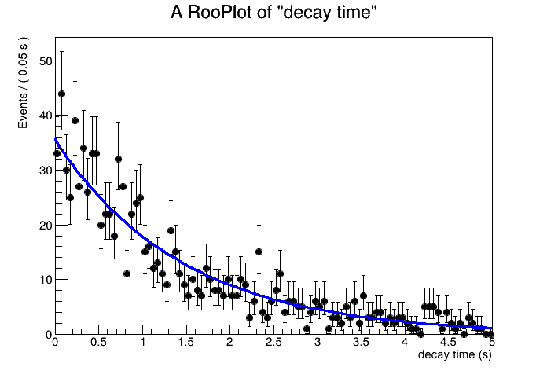
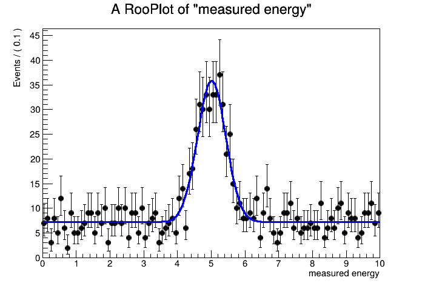

RooFit 拟合实例
RooFit 用可观测量、参数和概率密度函数构造统计模型。下面只保留实际分析中最常用的两种情形。
指数衰变：拟合分布形状
观测到的事件数固定时，普通未分箱似然使用每个事件的测量值拟合分布形状。这里用正的寿命参数 \(\tau\) 直接写出 \(e^{-t/\tau}\)；RooFit 会在变量范围内归一化概率密度。
using namespace RooFit;
RooRealVar t("t", "decay time", 0.0, 5.0, "s"); // 可观测量及范围
RooRealVar tau("tau", "lifetime", 1.5, 0.1, 5.0, "s");
RooGenericPdf decay("decay", "exp(-t/tau)",
RooArgList(t, tau)); // 定义概率密度
RooRandom::randomGenerator()->SetSeed(12345);
RooDataSet *data = decay.generate(t, 1000); // 产生未分箱事件
tau.setVal(1.0);
decay.fitTo(*data, PrintLevel(-1)); // 直接拟合每个事件的时间
std::cout << "tau = " << tau.getVal()
<< " +/- " << tau.getError() << " s\n";
RooPlot *frame = t.frame();
data->plotOn(frame);
decay.plotOn(frame);
TCanvas decayCanvas("decayCanvas", "decay fit", 700, 500);
frame->Draw();import ROOT
t = ROOT.RooRealVar("t", "decay time", 0.0, 5.0, "s") # 可观测量及范围
tau = ROOT.RooRealVar("tau", "lifetime", 1.5, 0.1, 5.0, "s")
decay = ROOT.RooGenericPdf(
"decay", "exp(-t/tau)", ROOT.RooArgList(t, tau)) # 定义概率密度
ROOT.RooRandom.randomGenerator().SetSeed(12345)
data = decay.generate(ROOT.RooArgSet(t), 1000) # 产生未分箱事件
tau.setVal(1.0)
decay.fitTo(data, ROOT.RooFit.PrintLevel(-1)) # 拟合每个事件的时间
print("tau =", tau.getVal(), "+/-", tau.getError(), "s")
frame = t.frame()
data.plotOn(frame)
decay.plotOn(frame)
decay_canvas = ROOT.TCanvas("decay_canvas", "decay fit", 700, 500)
frame.Draw()
如果数据只有直方图计数，先建立 RooDataHist，同一个概率模型即可进行分箱拟合：
using namespace RooFit;
t.setBins(40);
RooDataHist binnedData(
"binnedData", "binned data", RooArgSet(t), *data); // 转为 bin 计数
tau.setVal(1.0);
decay.fitTo(binnedData, PrintLevel(-1)); // 对 bin 计数进行似然拟合t.setBins(40)
binned_data = ROOT.RooDataHist(
"binned_data", "binned data", ROOT.RooArgSet(t), data) # 转为 bin 计数
tau.setVal(1.0)
decay.fitTo(binned_data, ROOT.RooFit.PrintLevel(-1)) # 拟合 bin 计数未分箱方法保留每个事件的位置；分箱方法使用每个 bin 的计数，因此结果可能受到 bin 宽度影响。方法应由实际保存的数据形式决定。
信号与本底：同时拟合形状和产额
谱中同时存在信号和本底，并且目标包括信号事例数时，应使用扩展最大似然。它除了拟合分布形状，还包含总事例数的 Poisson 概率。
using namespace RooFit;
RooRealVar x("x", "measured energy", 0.0, 10.0);
RooRealVar mean("mean", "peak position", 5.0, 4.0, 6.0);
RooRealVar sigma("sigma", "peak width", 0.4, 0.1, 1.0);
RooGaussian signal("signal", "signal", x, mean, sigma);
RooPolynomial background("background", "background", x);
RooRealVar signalYield("signalYield", "signal events", 300, 0, 2000);
RooRealVar backgroundYield("backgroundYield", "background events",
700, 0, 3000);
RooAddPdf model("model", "signal + background",
RooArgList(signal, background),
RooArgList(signalYield, backgroundYield)); // 以产额组合两种成分
RooDataSet *spectrum = model.generate(x, Extended());
signalYield.setVal(200);
backgroundYield.setVal(800);
model.fitTo(*spectrum, Extended(), PrintLevel(-1)); // Extended：同时拟合总产额
std::cout << "signal events = " << signalYield.getVal()
<< " +/- " << signalYield.getError() << "\n";
RooPlot *spectrumFrame = x.frame();
spectrum->plotOn(spectrumFrame);
model.plotOn(spectrumFrame);
TCanvas spectrumCanvas("spectrumCanvas", "spectrum fit", 700, 500);
spectrumFrame->Draw();import ROOT
x = ROOT.RooRealVar("x", "measured energy", 0.0, 10.0)
mean = ROOT.RooRealVar("mean", "peak position", 5.0, 4.0, 6.0)
sigma = ROOT.RooRealVar("sigma", "peak width", 0.4, 0.1, 1.0)
signal = ROOT.RooGaussian("signal", "signal", x, mean, sigma)
background = ROOT.RooPolynomial("background", "background", x)
signal_yield = ROOT.RooRealVar("signal_yield", "signal events", 300, 0, 2000)
background_yield = ROOT.RooRealVar(
"background_yield", "background events", 700, 0, 3000)
model = ROOT.RooAddPdf(
"model", "signal + background",
ROOT.RooArgList(signal, background),
ROOT.RooArgList(signal_yield, background_yield)) # 以产额组合两种成分
spectrum = model.generate(ROOT.RooArgSet(x), ROOT.RooFit.Extended())
signal_yield.setVal(200)
background_yield.setVal(800)
model.fitTo(spectrum, ROOT.RooFit.Extended(),
ROOT.RooFit.PrintLevel(-1)) # 同时拟合总产额
print("signal events =", signal_yield.getVal(),
"+/-", signal_yield.getError())
spectrum_frame = x.frame()
spectrum.plotOn(spectrum_frame)
model.plotOn(spectrum_frame)
spectrum_canvas = ROOT.TCanvas("spectrum_canvas", "spectrum fit", 700, 500)
spectrum_frame.Draw()
普通似然只确定归一化后的分布形状；扩展似然还利用总计数信息来估计各成分的产额。两者不能只按“哪个结果更好”来选择。